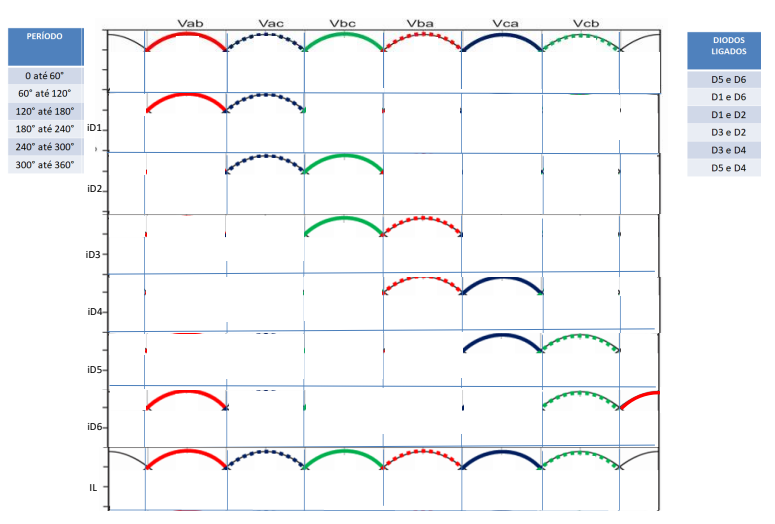
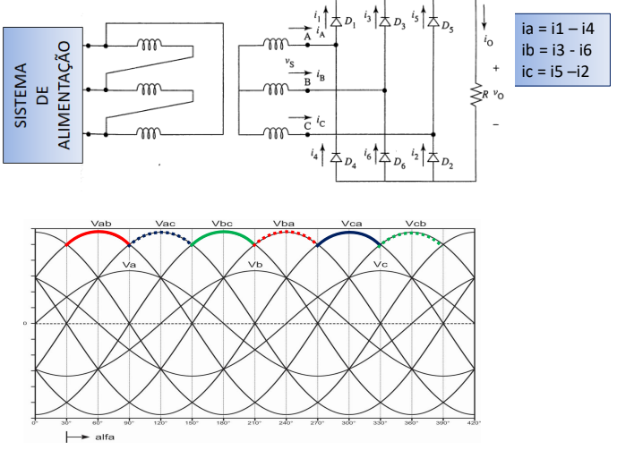

Retificador Trifásico em Ponte Seis Pulsos
O retificador trifásico em ponte seis pulsos é um dispositivo que converte uma tensão elétrica alternada (AC) em uma tensão elétrica contínua (DC). Ele é composto por seis diodos, um transformador trifásico e um filtro capacitivo. Seu funcionamento é parecido com o retificador trifásico de três pulsos, mas por ter 6 diodos ligados cada uma a uma ponta do sistema, faz com que aja mais pulsos contínuos e suaves por conta que dois diodos são ligados por pulso.
As formas de onda da tensão de entrada e da tensão de saída são mostradas na figura abaixo.

A tensão de saída do retificador trifásico em ponte seis pulsos é uma onda senoidal com seis pulsos por ciclo. A tensão média da saída é igual à tensão média das tensões das três fases da entrada. A Lei de Kirchhof também é aplicada a esse sistema, para determinar a corrente nos diodos.
As principais vantagens desse modelo de retificador de seis pulsos são as seguintes: Melhor eficiência, geralmente superior a 90%, menor distorção harmônica, a distorção harmônica é geralmente inferior a 10%.
No entanto, o retificador trifásico em ponte seis pulsos também apresentam algumas desvantagens, dentre a que mais se destaca é o seu custo, que é superior ao custo do retificador trifásico não controlado de três pulsos, por isso é importante saber qual dispositivo usar.